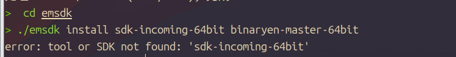
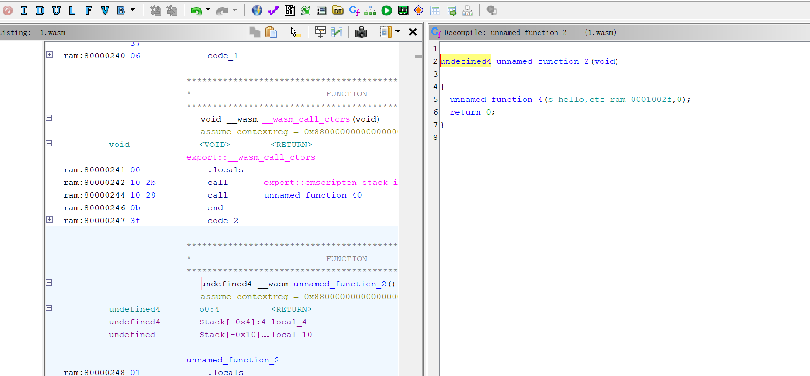
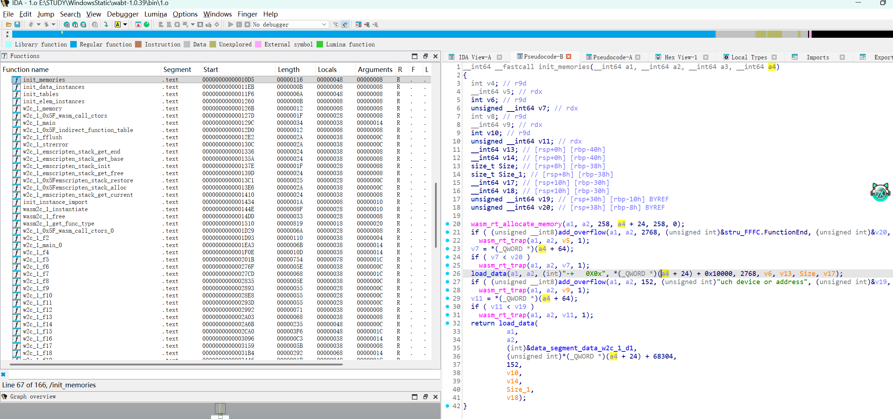
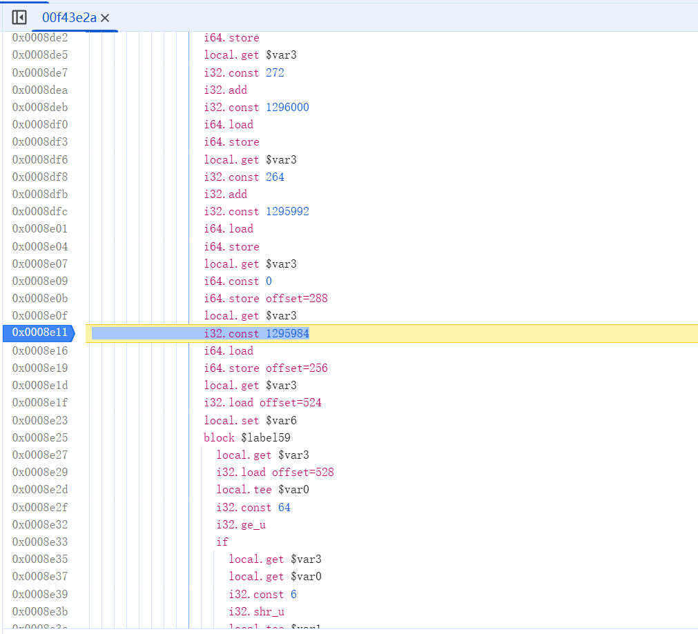
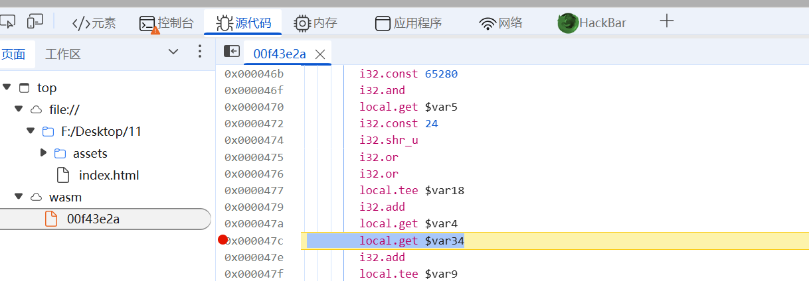
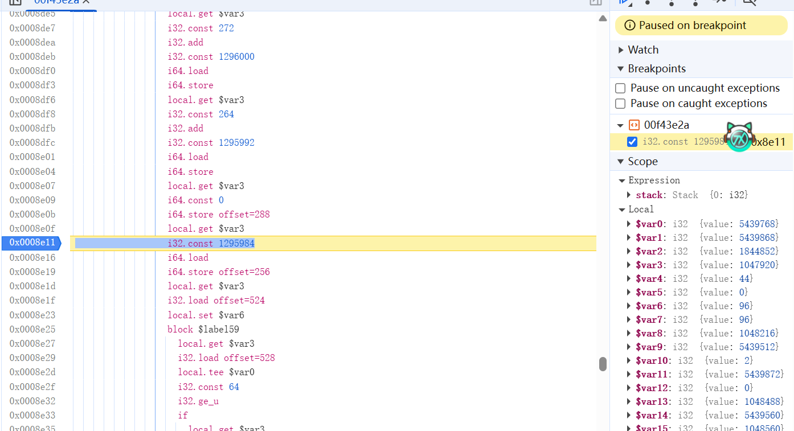
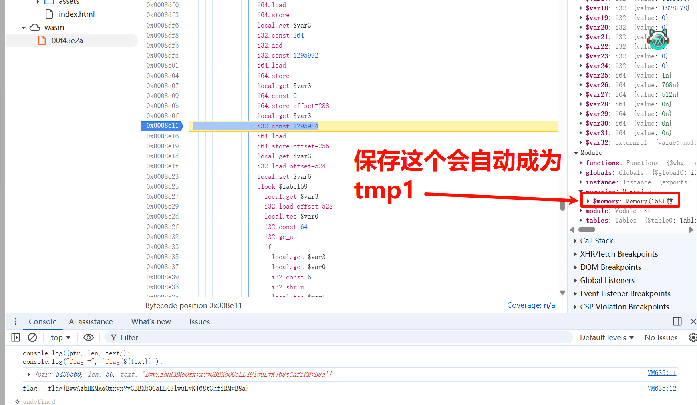

wasm逆向初探
refer：
https://wsxk.github.io/wasm_re/
https://xz.aliyun.com/news/12917#toc-1
https://xz.aliyun.com/news/13187
前言
前些日子打吾爱破解红包赛事，了解到还有wasm这个号称”运行在浏览器上的汇编“的类似于asm的汇编语言。
它的开发教程可以见这个文章：https://www.wasm.com.cn/getting-started/developers-guide/
大概了解一下，就是使用官方开发环境。编写一个C代码，转为html，其中就有wasm代码。
开发环境搭建
方案1
首先按照上面文章说的，我们先安装sdk环境

如果发生这种情况，说明教程给的太老了，改用下列方式：
1 | cd emsdk |
出来后，我们就得到一个html文件，一个js文件和一个wasm文件
此方法弄出来的是一个类似于控制台的程序，我只是了解wasm正向开发，不多介绍了，我也不太懂，有高手的话可以友好交流一下
方案2
这个方案我没有尝试过，也是一款工具，各位可以自行查看一下：
https://www.assemblyscript.org/introduction.html#from-a-webassembly-perspective
还有很多可以开发wasm的工具，就不再一一赘述了。
逆向方式
静态分析
1.ghidra
安装这个扩展：nneonneo/ghidra-wasm-plugin: Ghidra Wasm plugin with disassembly and decompilation support

可以看到基本上能看到大概逻辑，但是还不尽如人意。但是能够分析就是强强工具了
2.ida
使用此项目：WebAssembly/wabt: The WebAssembly Binary Toolkit
这个项目也可以转化为wat文件，但是一般转为c再调用ida会省事一点
直接用ida分析是走不通的
我们需要先用工具将其转化为c，再连接出o文件
先输入命令：wasm2c.exe F:\Desktop\ntgl33HW\1.wasm -o test.c
这里编译的步骤很多人会报错，归期原因无非是库文件或者头文件缺失，制定好参数即可
有时候不指定-I参数（大写i）头文件和-L库文件，就会报错，因此这里直接贴出我运行成功的命令在下面：
gcc -c test.c -o 1.o -I ../include -I ../share/wabt/wasm2c -L ../lib
此命令运行在bin文件夹下，其目录结构是bin和include、share、lib等同级

看着顺眼多了
3.浏览器
浏览器可以F12，点击源代码，看wasm代码

右键save，即可发给AI美美摸鱼
动态调试
部分参考：吾爱破解2026红包题WriteUP（除高级） - 吾爱破解 - 52pojie.cn
此方法也是一个NB方法，因为WASM号称浏览器的汇编，浏览器肯定可以执行，那这样的话就跟js没什么两样，我们可以进行调试分析了

这就是和调试js一样。浏览器也能直接看到wasm文件

我们可以任意下断点，右边能展示出每个变量的值
由于我们有时候提取数据不是按照某个变量来的，因此部分情况有必要写封装脚本
就拿这次吾爱破解红包题来说，就可以用动调做题
比如这里，我们就得写脚本提取值出来，右键memory储存为全局变量，输入以下脚本
1 | const mem = new Uint8Array(temp1.buffer); |
然后我们断点断在合适的位置，每次输出一个数字出来我们就用这个脚本运行一次把那个值打出来

这样就得到了flag，而不用我们特别关注解密等的算法具体实现